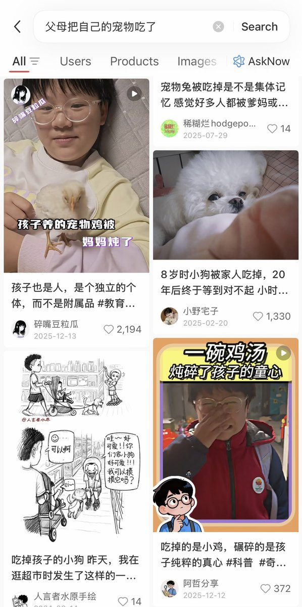

amber.jellyfish
@amber_medusozoa
但每次看到这种批评还是心情复杂，因为确实很多老中家长会纯粹出于施虐欲把孩子的宠物吃了

Niconi
@maximiNiconi
在3月26号的德国二台美食节目中主持人指出亚洲人吃宠物，特别是中国。
我觉得在2025年的当下，很多德国人越活越回去了，越来越依赖刻板印象、思维惯性和欧洲中心主义/大西洋主义来进行活动。更离谱的是在德国的亚洲人还要为这样的侮辱支付一年216欧以支持他们运转。@ZDF @heuteshow @ZDFheute https://t.co/awBaBqTRLP